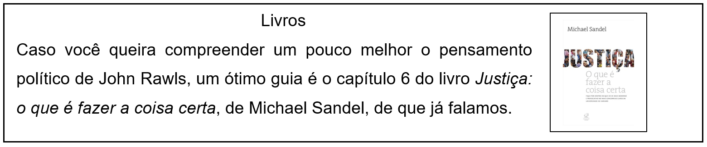

CAPÍTULO 4: IGUALDADE E DIFERENÇA NA INDÚSTRIA TÊXTIL E DE VESTUÁRIO
Se você tivesse que escolher os princípios mais fundamentais que cumpririam o papel de governar nossa vida em sociedade, indicando nossos direitos e deveres mais básicos como cidadãos, que princípios você pensa que seriam justos?
Imaginando uma sociedade justa
Vamos supor que você trabalhe em uma grande empresa da indústria têxtil e de vestuário. Nessa empresa, existem trabalhadores homens, mulheres, brancos, negros, indígenas, heterossexuais, homossexuais, membros de diferentes religiões e igrejas, ateus, agnósticos, etc. Você já deve ter entendido: sua empresa contém uma parcela representativa da sociedade em que ela está inserida. Como você acha que os direitos dos funcionários dessa empresa deveriam ser distribuídos entre eles? Você acha que os funcionários deveriam ser discriminados por ser homem ou mulher, branco, negro ou indígena? Você pensa que alguns dos grupos de funcionários não deveriam poder expressar certas opiniões, ter certas crenças ou certa orientação sexual? E quanto aos salários, você acha que todos deveriam receber o mesmo? Ou você acha que diferenças devem ser permitidas? Em caso afirmativo, quão grandes você pensa que essas diferenças devem poder ser sem ser injustas?
Muitas vezes, associou-se o debate sobre justiça ao debate sobre igualdade de tal modo que a defesa de uma sociedade justa era necessariamente vista como a defesa de uma sociedade igualitária. Mas igualitária em que sentido? O pensador que estudaremos neste capítulo, o filósofo político norte-americano John Rawls, separou a defesa da justiça da defesa da igualdade econômica sem, no entanto, defender a perspectiva libertária de defesa do livre mercado.
Igualdade de direitos e o princípio da diferença em John Rawls
Do mero fato de duas ou mais pessoas estabelecerem, voluntariamente, um acordo entre si, se segue que o acordo é justo? Imagine que apenas os funcionários homens brancos católicos heterossexuais da empresa acima se reúnam para elaborar a carta de princípios que regulará o convívio entre todos os funcionários. É razoável pensar que a carta que eles redigirão não será representativa dos interesses de todos os funcionários, e que pelo menos alguns dos princípios por eles escolhidos poderão visar apenas o interesse daquele pequeno grupo. Isso significa, então, que se todos os grupos de funcionários estivessem representados na assembleia que redigisse a carta de princípios da empresa, essa carta seria justa? Não necessariamente. Imagine que os representantes de alguns dos grupos de funcionários tenham tido um maior acesso à educação ao longo de sua formação e que eles possuam alguns conhecimentos de mecanismos legais que permitiriam a eles direcionar a redação da carta no sentido de garantir a satisfação de interesses apenas dos grupos que eles representam. Caso isso acontecesse, também diríamos que a carta de princípios redigida na assembleia de funcionários não é uma carta justa. Parece, portanto, que a representatividade e a aprovação dos representantes de cada um dos grupos de funcionários em relação à carta redigida não é suficiente para garantir a justiça dos princípios escolhidos. Mas o que, então, seria suficiente para garantir que os princípios escolhidos na assembleia fossem justos?
Influenciado pelo filósofo alemão Immanuel Kant (1724-1804), o filósofo político norte-americano John Rawls (1921-2002) defendeu, em seu livro Uma Teoria da Justiça (1971), que um contrato que determinasse, de forma justa, nossos direitos e deveres mais fundamentais como cidadãos, isto é, um contrato social justo, só poderia ser estabelecido se assumíssemos a perspectiva de uma situação hipotética em que estivéssemos “vendados” pelo que ele chamou de “véu da ignorância”. Esse véu ocultaria de nós, contratantes, todas as características que temos dentro de nossa sociedade, como gênero, raça, etnia, orientação sexual, crenças religiosas (ou a ausência delas), se somos ricos ou pobres, nossa inteligência, nossos talentos, etc. Rawls considerava que essa seria a única maneira de garantir a justiça do contrato porque, nesse caso, ninguém estaria pensando em si mesmo no momento de eleger os princípios que regulariam nossa vida em sociedade: ninguém teria a oportunidade de, por exemplo, sabendo que é heterossexual, escolher princípios que privilegiassem os heterossexuais; ou, sendo católico, eleger princípios que privilegiassem os católicos. Vendados pelo “véu da ignorância”, todos pensaríamos no que seria melhor para a sociedade como um todo, e não apenas para esse ou aquele grupo.
Para entender mais
O filósofo alemão Immanuel Kant (1724-1804), para muitos o mais importante filósofo da era moderna, defendeu que o ser humano só é livre quando dá a si mesmo o fim de sua ação, e não quando ele apenas busca os meios para atingir um fim que ele mesmo não escolheu alcançar – um exemplo de fim que não escolhemos alcançar nos é dado pela sede: quando sentimos sede, apenas buscamos os meios para saciá-la, mas não podemos escolher não sentir sede. Enquanto age por motivos de inclinação, ou seja, visando o seu próprio interesse, o homem não é inteiramente livre. Só se pode dizer que a ação de uma pessoa tem valor moral se essa ação foi realizada por motivos de dever, ou seja, pelo reconhecimento de que ela era a coisa certa a ser feita. Do mesmo modo, Rawls pensou que um contrato social só é justo se ele não é concebido como um meio para a realização de interesses individuais. Se, para Kant, é quando os homens são livres que, na moral, eles são bons, para Rawls, é quando os homens são livres que, na política, eles são justos.
Vendados pelo “véu da ignorância”, Rawls disse que o primeiro princípio de justiça que escolheríamos, se pensássemos de forma racional, seria o princípio da igualdade de direitos básicos para todos os cidadãos: todos deveriam, por exemplo, poder praticar a religião que quisessem, ou não praticar nenhuma, e ninguém deveria ser discriminado por ser homem ou mulher, por ser branco, negro ou índio, por ser heterossexual, homossexual ou bissexual, por ser judeu, árabe, etc. Não sabendo se pertenceríamos a uma ou outra minoria, não escolheríamos, por exemplo, viver em uma sociedade regida pelo utilitarismo, dado que, como vimos, o utilitarismo sempre privilegia o bem-estar da maioria em detrimento do bem-estar da minoria.
Agora, que princípio ou sistema escolheríamos para governar a distribuição de riqueza em nossa sociedade? Rawls começa descartando os sistemas estamentais, como o que existia na Idade Média europeia, ou de castas, como o que ainda existe em algumas regiões da Índia, porque esses sistemas distribuem aquilo que uma sociedade valoriza de acordo com o nascimento. Se você se lembra um pouco da história da Idade Média, você deve se lembrar que, durante esse período, a sociedade europeia estava dividida, basicamente, em três grandes grupos sociais: o do clero (composto pelos membros da igreja católica), o da nobreza (composto pelos donos de terras) e o dos servos (composto por aqueles que trabalhavam na terra). Naquela sociedade, por maior que fosse o esforço de um servo ao longo de sua vida, era praticamente impossível que ele se tornasse um nobre, enquanto era praticamente impossível que um nobre, por menor que fosse o seu esforço, se tornasse um servo. Ou seja, a organização da sociedade medieval impossibilitava a mobilidade social entre o segmento dos servos e o dos nobres, e essa imobilidade estava baseada, única e exclusivamente, no critério do nascimento. Ora, um sistema como esse era claramente injusto, como observou Rawls, porque a posição social em que alguém nasce é um fator que está para além do poder de escolha de qualquer indivíduo: se nenhum indivíduo tem o poder de escolher em que posição social ele irá nascer, então não é justo que as oportunidades que ele encontrará em vida sejam determinadas pela sua posição de nascimento.
O livre mercado tampouco seria, para Rawls, um sistema justo de distribuição de riqueza. É verdade que esse sistema representa um avanço em relação aos sistemas estamentais ou de castas, pois, ao contrário desses sistemas, ele permite a mobilidade social na medida em que garante a igualdade de todos perante a lei e abre oportunidades de crescimento econômico, em princípio, para todos: a oportunidade, por exemplo, de abrir um negócio lucrativo ou de entrar em uma universidade está, no livre mercado, aberta para todos. No entanto, é evidente que, na disputa por riqueza, poder e oportunidades, os competidores partem, no livre mercado, de condições diferentes, alguns deles com ampla vantagem sobre os demais. Alguém que nasceu em uma família rica terá oportunidades de estudo, experiências culturais e diferentes formas de capital para investimento em um novo negócio que praticamente nenhuma pessoa que tenha nascido em uma família pobre terá. Se compararmos essa disputa com uma maratona, é como se um dos competidores partisse do começo da prova enquanto o outro já parte da metade. É verdade que os dois competidores terão de se esforçar, mas também é verdade que um deles terá uma vantagem muito maior, e essa vantagem está, novamente, amparada em um critério que está para além do poder de escolha dos indivíduos: o nascimento. Uma sociedade regida pelo livre mercado só seria justa, observa Rawls, se as condições de partida dos indivíduos fossem as mesmas.
Uma sociedade melhor do que aquela regida pelo livre mercado seria regida pela meritocracia, um sistema que aproxima as condições de partida dos indivíduos na competição por aquilo que sua sociedade valoriza. Um sistema meritocrático faz isso através de programas assistenciais que oferecem boas oportunidades de educação e saúde para pessoas de baixa renda. No entanto, por melhor que esse sistema pareça, Rawls acreditava que ele ainda não seria perfeitamente justo, pois ele ainda permite que surjam amplas desigualdades entre os indivíduos por causa de uma outra vantagem moralmente arbitrária: o talento natural. Em uma corrida em que todos partem do mesmo ponto de partida, vence o mais veloz. No entanto, não se pode dizer que o fato de Usain Bolt ser mais veloz do que Jô Soares se deve apenas ao esforço de Bolt enquanto indivíduo. Como estudos que comparam o desempenho de Bolt com seus principais adversários, existem características físicas do corpo de Bolt que lhe favorecem enquanto corredor. E, sem nos restringirmos ao caso de Bolt, como um estudo realizado por psicólogos norte-americanos indica, talvez até mesmo o fato de uma pessoa ser mais esforçada do que outra se deva a fatores que estão para além do poder de escolha dos indivíduos. O que esse estudo mostra é que, em geral, irmãos mais velhos tendem a ser mais bem sucedidos em suas carreiras do que seus irmãos mais novos. Ora, mais uma vez, ninguém escolhe ser o primeiro ou o segundo filho. Parece, portanto, que o mérito de qualquer pessoa pode ser questionado: será uma pessoa realmente merece aquilo que ela possui?
Como, então, lidar de forma justa com as diferenças entre as aptidões naturais dos indivíduos? Como lidar de forma justa com o fato de que Messi nasceu com um talento muito maior para jogar futebol do que um jogador que atua na mesma posição, porém num clube de terceira divisão, e que recebe um salário mais de mil vezes menor do que o do craque do Barcelona? Como lidar com o fato de que um estudante de medicina nasceu com um talento muito maior para ser médico do que muitos outros estudantes do seu curso e de outros, e que, por isso, ele terá, muito provavelmente, uma renda muito maior do que a de todas essas outras pessoas? Muitas pessoas já defenderam que a melhor maneira de lidar com essas diferenças arbitrárias inevitáveis entre as pessoas é eliminar a propriedade privada e distribuir igualmente a riqueza entre todos os indivíduos. Rawls, no entanto, não considerou que essa seria a melhor saída: se todos ganharem a mesma coisa, que incentivo uma pessoa terá para estudar medicina por mais de dez anos se, no final das contas, ela ganhará o mesmo que um mau médico ou que alguém que precisou estudar muito pouco para exercer sua profissão? E uma sociedade precisa muito de bons médicos. Tendo isso em vista, Rawls defendeu que, sob o “véu da ignorância”, os indivíduos, pensando de forma racional, prefeririam uma sociedade regida pelo que ele chamou de princípio da diferença: uma sociedade que permita diferenças de renda consideráveis entre aqueles que estão no topo e aqueles que estão na base da pirâmide social, contanto que essas diferenças tornem a vida dos que estiverem na base da pirâmide melhor que ela seria se essas diferenças de renda não fossem permitidas. Ou seja, deixe que algumas profissões sejam mais valorizadas economicamente do que outras, contanto que essa diferença torne a vida das pessoas menos favorecidas melhor do que ela seria se essa diferença de renda não fosse permitida. Se todos os médicos do país ganhassem a mesma coisa, talvez nenhum deles quisesse trabalhar em uma região de difícil acesso. No entanto, se forem oferecidos salários muito altos que alguns médicos se desloquem para essas regiões, é provável que a demanda desses locais por bons médicos seja atendida.
Para entender mais
A tabela abaixo apresenta três diferentes situações, cada uma correspondendo a uma diferente distribuição de riqueza. A situação 2 equivaleria a uma situação de grande desigualdade em que os menos favorecidos teriam, no entanto, melhores condições de vida do que na situação de igualdade absoluta representada por 1.
Ação e Reflexão
1) O que é um contrato social? 2) Por que, de acordo com Rawls, se estivéssemos sob o véu da ignorância, não escolheríamos o utilitarismo? Quais tipos de direitos garantiríamos a todos os indivíduos? 3) Apresente e explique o princípio da diferença, defendido por Rawls. 4) O que Rawls vê de errado com sociedades estamentais ou de castas? 5) Qual é a crítica de Rawls a sociedades que distribuem riqueza de acordo com o livre mercado? 6) Por que, para Rawls, sociedades meritocráticas ainda não são perfeitamente justas? 7) Suponhamos que João, um indivíduo qualquer, está vendado pelo véu da ignorância, e que esse véu esconde de João todas as suas características, exceto uma: João será, em sociedade, uma pessoa muito invejosa. Sabendo disso, você acha que João escolheria viver na situação 1 ou 2 do quadro visto na última página? Alguma outra característica de João poderia levá-lo a pensar em optar pela situação 1 em vez de optar pela 2?
O que aprendi
1) O consentimento na hora de estabelecer um contrato não garante que o contrato seja justo;
2) O filósofo político norte-americano John Rawls defendeu que um contrato social justo só pode ser estabelecido se desconsiderarmos nossas características particulares, a fim de que não busquemos nos favorecer através do contrato;
3) Rawls defende a igualdade no que diz respeito ao que ele concebe como direitos básicos dos indivíduos, mas também defende a diferença no que diz respeito à distribuição de riqueza, considerando justo que, satisfeitas as exigências do seu princípio da diferença, alguns tenham muito e outros tenham pouco;
4) Rawls considera injustas sociedades estamentais ou de castas, sociedades governadas pelo livre mercado, bem como sociedades meritocráticas, porque, no final das contas, todas elas permitem que a riqueza e as oportunidades que estão à disposição dos indivíduos sejam distribuídas com base em fatores que estão para além do poder de escolha desses indivíduos.